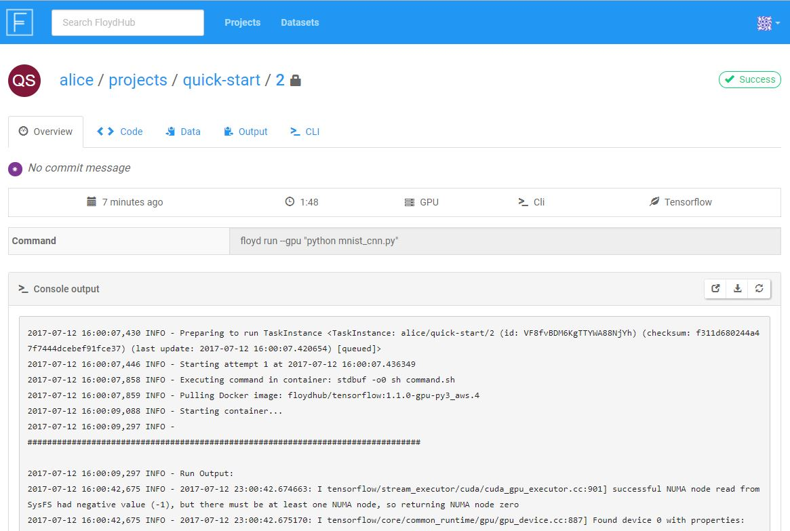
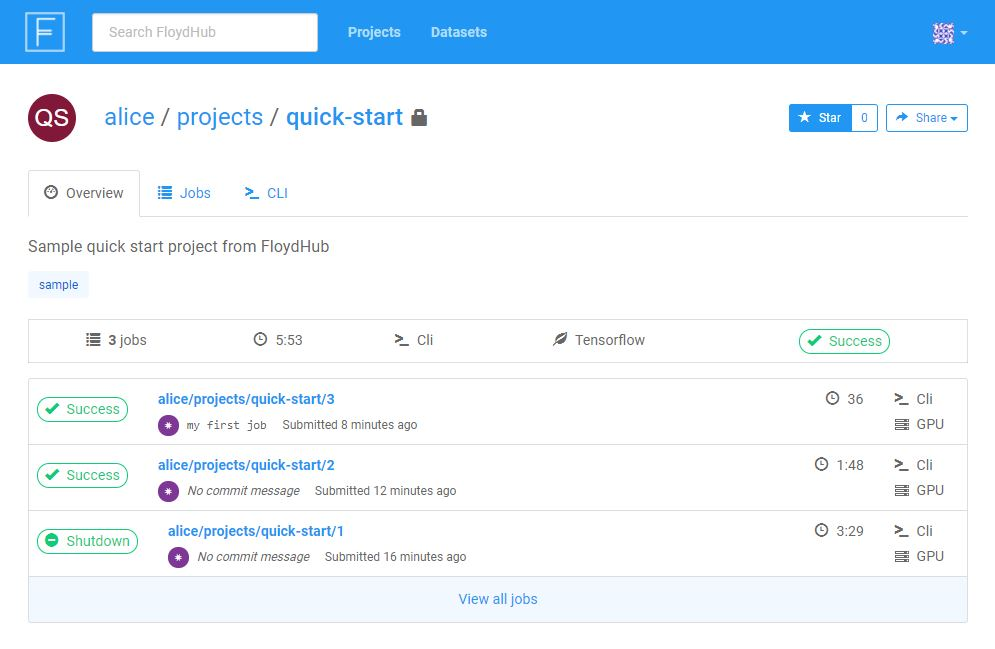

Quick Start
Introduction¶
With this quickstart guide, you'll get acquainted with FloydHub will learn the basics necessary to get up and running on the platform.
We'll start with an overview of FloydHub and then jump into training your first deep learning model on FloydHub using TensorFlow and the MNIST dataset (better known as the "Hello, world!" of data science). We'll be training a convolutional neural network (CNN) model to recognize hand-written digits using FloydHub's GPU servers. For more details on the data and the model, please refer to the Tensorflow documentation.
Quick preparation checklist¶
Create a new project¶
First, we'll need to create a project. All the jobs we run while training our model will be grouped under this project, and we'll be able to go back and review each job later. For more information about projects, check out our Core Concepts page.
To create the project, visit www.floydhub.com/projects, and click the
New Project button in the top right corner of the screen. Complete the form
to create a new project. (Note that private projects are only available on our
Data Scientist Plans.)
Initialize the project on your machine¶
Now that we've created the project on FloydHub, we can use Floyd CLI to start
getting some deep learning done. To "initialize" a FloydHub project on your
machine means to run the floyd init <name_of_project> command in your
project's directory. This will create some files in the directory that Floyd
CLI uses to keep track of your jobs and sync with floydhub.com.
If you were writing code from scratch, you would create a new directory on your computer and initialize the FloydHub project in there. In this quick start, we'll clone an existing GitHub repository and use its code. Clone the quick-start repository from GitHub onto your computer, and change directories into it:
$ git clone https://github.com/floydhub/quick-start.git Cloning into 'quick-start'... ... $ cd quick-start $ ls LICENSE mnist_cnn.py mnist_cnn.ipynb README.md
Then, initialize the project using the name you gave your project on floydhub.com:
$ floyd init quick-start
Project "quick-start" initialized in the current directory
For purposes of this tutorial, this repository contains one important file:
mnist_cnn.py, a Python script to train a convolutional neural network model
against the MNIST dataset. Feel free to look through the file if you'd like,
but you don't need to.
Get the Dataset¶
To run our deep learning script, we'll need to give the script access to the MNIST dataset. You probably know that the MNIST dataset is actually available within the Tensorflow package itself, but for the purposes of this tutorial we have separated out the dataset so you can get a feel for what it feels like to work with datasets on FloydHub. We have the MNIST dataset pulicly available on FloydHub here.
Note
On FloydHub, datasets are kept separate from your project/code. This approach serves two main purposes:
- Upload data only once: Datasets are usually big, so we don't want to have to upload them each time we run our code.
- Enable collaboration: When datasets are kept separate from code, team members and communities can more easily work on projects together.
If you'd like more information on keeping data separate from code, check out this section of our Core Concepts page.
The mnist_cnn.py script expects the MNIST data to be located at /mnist on
the computer where the script runs. In the next section, we'll make sure that
our MNIST data is located in the right place when our code runs on FloydHub's
servers.
When you start working on your own projects, you'll eventually want to upload your own dataset. Check out this article to learn how to do that.
Running Your First Job¶
Now that we have our project created and our dataset ready, let's run our first
job and train our model! A job is an
execution of your code on FloydHub's deep-learning servers. To kick off a job,
we use the floyd run command.
This run this command to kick off the training job:
$ floyd-dev run --data mckay/datasets/mnist/1:/mnist --env tensorflow "python mnist_cnn.py" Creating project run. Total upload size: 25.4KiB Syncing code ... [================================] 27316/27316 - 00:00:00 JOB NAME ---------------------- mckay/projects/mnist/8 To view logs enter: $ floyd run \ --gpu \ --env tensorflow \ --data floydhub/datasets/mnist:/mnist \ "python mnist_cnn.py" Syncing code ... RUN ID NAME ---------------------- ------------------- AKpnXqj9BEU6d8KhmygTyb alice/quick-start/1 To view the logs enter: floyd logs alice/quick-start/1
Monitoring your Job¶
You can view the status of your Job from your terminal using the floyd status command. You can specify a single Job name (e.g. floyd status alice/quick-start/1) to get its status, or the floyd-cli will show the status of all Jobs in the current Project.
$ floyd status RUN ID CREATED STATUS DURATION(s) NAME INSTANCE DESCRIPTION ---------------------- --------- -------- ----------- ------------------- --------- ----------- AKpnXqj9BEU6d8KhmygTyb just now running 15 alice/quick-start:1 gpu
You can also view the status of your job in your browser by visiting the Job URL printed by the floyd run command. For example, https://www.floydhub.com/alice/quick-start/1

Viewing the Job's Logs¶
It's easy to view the logs generated by the job from your terminal with the floyd logs command. You'll need to specify the Job name in the command.
$ floyd logs -t alice/quick-start/1 ... 2017-07-12 16:00:07,446 INFO - Starting attempt 1 at 2017-07-12 16:00:07.436349 2017-07-12 16:00:09,088 INFO - Starting container... 2017-07-12 16:00:09,297 INFO - ... ############################################################################## 2017-07-12 16:00:09,297 INFO - Run Output: 2017-07-12 16:01:46,154 INFO - Successfully downloaded train-images-idx3-ubyte.gz 9912422 bytes. 2017-07-12 16:01:46,158 INFO - Iter 1280, Minibatch Loss= 39855.289062, Training Accuracy= 0.17969 2017-07-12 16:01:46,159 INFO - Iter 2560, Minibatch Loss= 14964.132812, Training Accuracy= 0.42969 ... ############################################################################## ...
The output of your code is printed in the Run Output section of the logs, between the ######### lines. Anything you log or print in your code will appear here, so this is a great way to monitor the progress of your model training command. In our quick-start project, we're logging the Training Accuracy of our model.
Using the -t (tail) flag will stream the logs as they are generated.
You can also view the logs in your browser using your Job URL. However, the logs in the Dashboard are not currently refreshed dynamically, so you'll need to refresh your browser periodically or press F5 to get the latest logs from the Dashboard.
Viewing the Job output¶
The model that we trained in this quickstart tutorial does not save any new output models - instead it simply prints the model results to the logs. We'll explore how to save model outputs in the Jupyter Notebook tutorial.
Serve your model¶
Iterating on your Project¶
Congratulations! You've run your first job on FloydHub 🎉
At this point, you can edit your Python code locally to make improvements or adjustments, and then kick off a new Job with the floyd run command. The floyd-cli will upload the newest versions of your code and submit another Job to the FloydHub servers. Along the way, FloydHub will be managing and tracking of all the iterations of Jobs within your Project.
You can always view details on all of the Jobs in your current Project with the floyd status command from your terminal, or by visiting the Project URL in your browser.
Example: www.floydhub.com/alice/quick-start

Help make this document better¶
This guide, as well as the rest of our docs, are open-source and available on GitHub. We welcome your contributions.
- Suggest an edit to this page (by clicking the edit icon at the top next to the title).
- Open an issue about this page to report a problem.